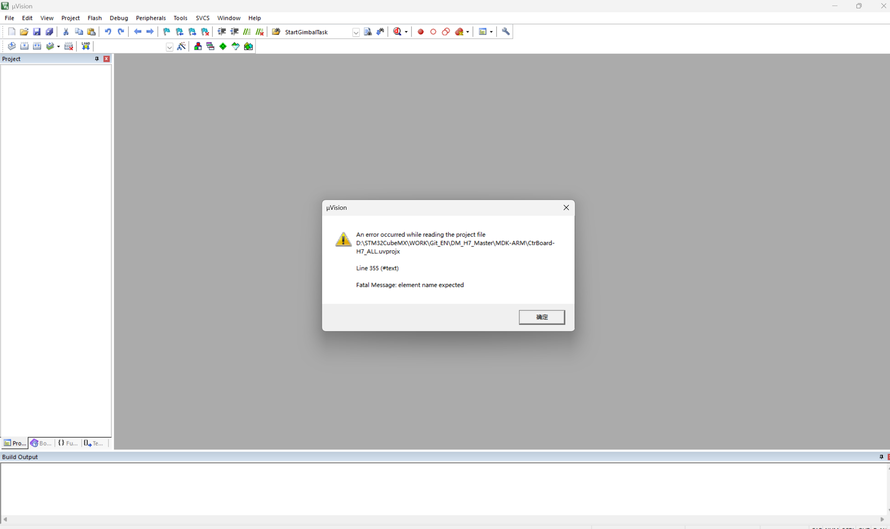

Git 教程：将 main 分支更新合并到本地
本教程将介绍如何通过 Git 将 main 分支上的更新合并到本地工作分支中。我们提供两套方案：一套是基于常见工作流程及遇到问题的详细解决方案，另一套是最优化的操作步骤。
方案一：常见流程及问题解决
以下是一个实际工作中遇到的流程，包括可能出现的问题及解决方法：
1. 远程仓库上创建 PR 请求，merge 完成
- 操作说明：在 GitHub/GitLab 等平台上，已经完成了 Pull Request 的创建和合并操作
- 实际影响：远程的 main 分支已更新，但本地代码尚未同步这些更改
2. 检查当前分支
git branch
- 命令解释：显示本地所有分支，当前分支前会有
*标记 - 目的：确认我们当前位于哪个分支，确保后续操作在正确的分支上进行
3. 尝试更新本地代码
git pull
- 命令解释：从远程仓库拉取当前分支的最新代码并自动合并
- 等同于：
git fetch+git merge origin/<current_branch>
或者更明确地指定分支：
git pull origin <current_branch_name>

- 命令解释：从远程仓库的指定分支拉取最新代码并合并到当前分支
- 问题：这两个命令在当前场景中有重复操作，通常只需使用第一条命令即可
4. VSCode Git 扫描当前工作区，尝试提交代码出现报错
- 问题描述：VSCode Git 界面显示错误信息
- 可能原因：
- 本地有未提交的更改，与远程更新产生冲突
- 本地和远程分支已经分叉（diverged）

下面 5 可以不看，他是一个提交过程中的一次报错。
5. 尝试推送本地更改
git push
- 命令解释：推送当前分支的更改到远程仓库
- 报错原因：本地分支没有跟踪远程分支或已经落后于远程分支
尝试设置上游分支：
git push --set-upstream origin <current_branch_name>
- 命令解释：将本地分支推送到远程并设置跟踪关系
- 报错信息：
because the tip of your current branch is behind its remote counterpart. - 错误原因：本地分支版本落后于远程分支，无法直接推送
6. 再次尝试拉取远程更新
git pull origin <current_branch_name>
- 命令解释：强制从指定远程分支拉取并合并到本地
- 结果：由于本地有修改且远程也有更新，进入合并冲突解决模式
7. 处理合并冲突
- VSCode 界面操作：
- 打开有冲突的文件，会看到类似如下标记的冲突区域：
<<<<<<< HEAD
本地代码
=======
远程代码
>>>>>>> origin/branch_name
- 对每个冲突选择：
- 采用当前更改：保留本地修改
- 采用传入更改：使用远程版本
- 保留双方更改：两者都保留
- 完成选择后按
Ctrl+S保存文件 -
暂存已解决的文件（通过 Git 面板中的 "+" 号或
git add命令） -
注意事项：
- 解决每一处冲突后必须保存文件
- 所有冲突解决完毕后，需要完成合并提交
8. 处理特殊文件冲突
- 特殊情况：Keil MDK 项目文件（*.uvprojx）等二进制或特殊格式文件冲突
- 解决方法：
- 方法1：找到上一个可用版本替换当前文件
- 方法2：在合并冲突时专门为这些文件选择"保留上次更改"
- 方法3：通过命令行指定使用某一版本：
git checkout --ours -- path/to/file.uvprojx # 保留自己的版本
git checkout --theirs -- path/to/file.uvprojx # 使用远程版本

9. 完成合并
所有冲突解决后：
编译完成，检查无误后提交即可。 下面暂时不要看，还未测试。
git add .
git commit -m "合并 main 分支更新"
git push
- 命令解释：
git add .- 暂存所有更改，包括解决的冲突git commit -m "..."- 创建合并提交git push- 推送合并后的代码到远程仓库
优化建议
- 在拉取远程更新前，先提交或暂存本地更改：
bash git add . # 暂存所有更改 git commit -m "本地修改的描述" # 提交本地更改 -
说明：确保本地工作被保存，避免在合并时丢失
-
使用 stash 暂时保存本地未提交的更改：
git stash # 暂存当前更改
git pull # 拉取远程更新
git stash pop # 恢复之前的更改（可能需要解决冲突）
-
说明：适用于不想立即提交但又需要先更新代码的情况
-
为特殊文件设置 .gitattributes：
*.uvprojx merge=binary # 将特定文件视为二进制文件处理
# 或
*.uvprojx merge=ours # 合并时自动保留自己的版本
- 说明：避免每次都要手动处理特殊文件冲突
方案二：最优化合并流程（下面不要看，还未测试）
下面是拉取 main 分支更新到本地工作分支的最优流程：
1. 确保本地工作已保存
git status
- 命令解释：显示工作区状态，包括已修改但未提交的文件
- 目的：了解当前修改情况，决定如何处理这些更改
如有未提交的更改，可以选择提交或暂存：
# 提交更改
git add . # 暂存所有更改
git commit -m "本地修改描述" # 提交更改
# 或者暂时保存更改
git stash save "进行中的工作" # 保存当前更改并添加描述
- 命令解释：
git add .- 将所有修改添加到暂存区git commit- 创建一个新的提交，记录当前项目状态git stash save- 临时保存修改，不创建提交
2. 确认并切换到目标分支
git branch # 查看所有本地分支
git checkout <branch_name> # 切换到需要更新的分支
- 命令解释：
git branch- 列出所有本地分支，当前分支有*标记git checkout- 切换到指定分支
3. 拉取远程最新状态
git fetch --all
- 命令解释：从远程仓库获取所有分支的最新状态，但不合并任何更改
- 目的：了解远程仓库的最新状态，为后续操作做准备
4. 合并 main 分支更新
git merge origin/main
- 命令解释：将远程 main 分支的更改合并到当前分支
- 可能结果：
- 自动合并成功：Git 自动处理所有更改
- 发生冲突：需要手动解决冲突
5. 解决可能的合并冲突
如果出现冲突，需要手动解决：
-
命令行查看冲突文件：
bash git status # 查看哪些文件有冲突 -
手动编辑冲突文件：
- 查找标有
<<<<<<<,=======,>>>>>>>的地方 - 编辑文件保留需要的代码
-
删除冲突标记
-
或使用 VSCode 解决冲突：
- 打开冲突文件
- 点击 "Accept Current Change"/"Accept Incoming Change"/"Accept Both Changes"
- 保存文件
6. 标记冲突已解决
git add <conflicted_file> # 标记单个文件冲突已解决
# 或
git add . # 标记所有冲突已解决
- 命令解释：将修改后的文件添加到暂存区，表示冲突已解决
7. 完成合并
git commit # 如果是合并操作，会自动生成合并信息
# 或自定义提交信息
git commit -m "合并 main 分支的更新"
- 命令解释：创建一个合并提交，完成分支合并过程
8. 推送更改到远程
git push
- 命令解释：将本地更改推送到远程仓库
- 注意：如果本地分支没有设置跟踪关系，可能需要：
bash git push --set-upstream origin <branch_name>
9. 恢复之前暂存的工作（如果使用了 stash）
git stash list # 查看所有暂存的工作
git stash pop # 恢复最近一次暂存的工作
# 或
git stash apply stash@{n} # 恢复特定的暂存工作但不删除 stash
- 命令解释：
git stash list- 查看所有保存的工作进度git stash pop- 恢复最新保存的工作并从 stash 列表中删除git stash apply- 恢复指定的工作但保留在 stash 列表中
特殊文件处理建议
配置 .gitignore 忽略编译生成文件
在项目根目录创建或编辑 .gitignore 文件，添加以下内容：
# 编译生成文件
*.o
*.d
*.axf
*.hex
*.bin
*.lst
*.map
*.bak
*.dep
*.lnp
*.iex
*.htm
*.build_log.htm
*.lnk
# IDE生成的临时文件
.vscode/
*.uvguix.*
*.scvd
JLinkLog.txt
*.dbgconf
为特殊文件设置合并策略
在项目根目录创建或编辑 .gitattributes 文件：
# Keil项目文件使用自己的版本
*.uvprojx merge=ours
*.uvoptx merge=ours
# 或者将其视为二进制文件
# *.uvprojx binary
- 说明：这会在自动合并时使用指定的策略，减少冲突处理
在冲突时手动选择特定版本
如果已经出现冲突，可以通过命令行强制选择某个版本：
# 保留自己的版本
git checkout --ours -- path/to/file.uvprojx
# 使用远程仓库的版本
git checkout --theirs -- path/to/file.uvprojx
- 命令解释：
--ours- 选择当前分支（你的工作分支）的版本--theirs- 选择要合并的分支（main 分支）的版本
总结
正确的工作流程核心步骤：
-
保存当前工作（commit 或 stash）
-
获取远程更新（fetch）
-
合并更新到本地分支（merge）
-
解决冲突（如果有）
-
完成合并提交（commit）
-
推送合并后的更改（push）
通过遵循这些步骤，可以有效避免大多数合并问题和数据丢失的风险。特别是对于特殊文件（如 Keil 项目文件），合理配置 Git 可以大大减少处理冲突的工作量。